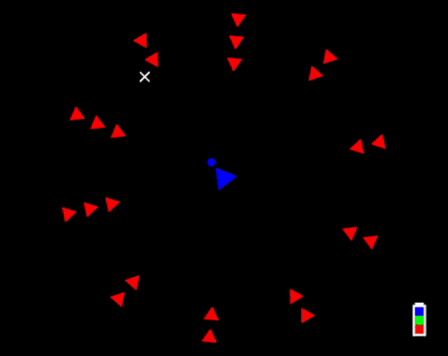
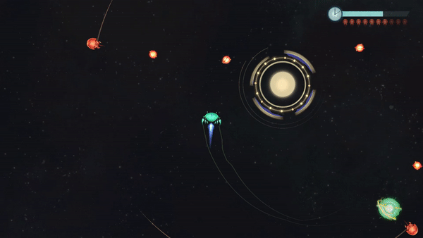
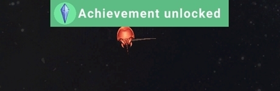
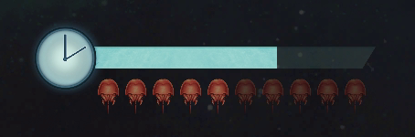
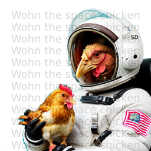

Zodiac Ranger III

Introduction
This project was particularly challenging for me as I was in a significantly brighter place than usual in personal life. For this 20-second-game, I chose to build on the mechanics from my previous games. The gravity mechanic is inspired by Zodiac Ranger HSS, the second game from Zodiac series. The hostile ships' behaviour is inspired by Hyper, my first completed project on Unity engine. For this game, I worked with an artist, Madi Funk from Canada, and a music composer, Jonathan Ontiveros from USA.

Zodiac Ranger Haffkine Space Station (ZR HSS)

Art
I chose to go with an art style that felt more like a painting and less like an old-school space-shooter since painting-like style felt more fulfilling. Madi's attention to detail in the artworks and animations helped make the game feel more alive.
Audio
Since it was a 20 second game, I did not want to add a music track that would start over each round and make it feel repetitive. I asked Jonathan to create a longer track so that the music would feel different enough across a few rounds. The music helped set appropriate emotion and pacing for the gameplay. The sound effects helped make the game feel more immersive.
Gravity
A lot of player feedback from ZR HSS conveyed that it was hard to reach the outermost NPC (which required player to use intertia carefully)
For ZR3, I have set player ship's acceleration and top speed to be higher than in HSS so that player may easily move around and even go beyond the enemy line (it may be challenging to go far or stay out there for long while trying to eliminate enemies)

Comets orbiting
One of the most important challenges I faced was conveying visually that the star's gravity affects the player ship. Though it is not the most effective method, I added little lines (pretend comet trails) orbiting the star in the direction that the player is expected to orbit the star.
Enemy movement
Initially, the game would choose randomly from an array of speeds and assign different speed to each ship. Though this provided a bit of variety, after a few rounds of playtests, it turned out to be better to have all enemy ships move at the same speed and have the speed increase every time an enemy is shot. This helped in maintaining a little bit of adaptive difficulty.
The enemy count was initially set to eight but since the gameplay felt relatively easy, it was increased to 10. The enemies were eventually moved further away from the center since the playable area did not feel large enough.
Enemy shooting
The enemies fire one shot per second. The game would randomly choose one of the enemies (from a list) as the starting position for the missiles.
The enemy missiles move slow enough to allow player to fly around them but also fast enough to make it feel challenging.
Player shooting
Player shooting started out as tap-for-each-shot. This quickly became fatiguing over a few rounds. So the player was allowed to fire continuously by holding the button down.
Player shooting
To prevent the game from becoming too easy, each clip is limited to a certain amount of shots, and after a clip is emptied, the player must wait for it to auto-reload. This helped reduce spamming of shots while also helping regulate difficulty.
The fire rate was initially set to be lower than what was set for the jam version. It was eventually increased so that the player would be able to hit their intended target with relatively less of a challenge considering there is no crosshair and the ship is turning and moving at its given rate.
In a project where there is going to be a lot of shooting, it may be better to have a fixed number of missile prefabs in a queue (pool) and call them in and out instead of instantiating new game objects each time an enemy or the player fires.
Last five seconds
In the last five seconds of a round, the camera zooms out completely. This would allow player to see more clearly the enemies left in the scene.

Camera zoom out
Also, the volume lowers for background music along with most sound effects. The player would still be able to hear enemies firing, ammo reload, and explosions so that there would be a bit of heightened awareness of the elements that matter the most in that context.
I had to set this carefully, having the audio fade out over time. As the sounds fade, the ticking sound effect blends in well enough, preventing the experience from feeling abrupt or disjointed.
Achievements
I wanted to learn to implement player achievements. Part of the logic is similar to saving the volume settings, and since I was already familiar with the latter, laying out groundwork for achievements was relatively easy. All that was left to do was add booleans to check whether conditions matched enough to unlock an achievement.
Adding the few extra booleans was challenging to an extent as it required me to change how other mechanics were called or were functioning. For example, for the "Kamikaze" achievement to be unlocked, I had to change the code so that upon winning, the player ship would either become immortal or not depending on whether the win state was achieved through kamikaze. I also had to change the way player death state called game-restart function so that it would show the victory screen instead of lose screen when conditions met.
Achievement notification
I almost avoided displaying notifications for when achievements unlocked. After taking a break, I put together a canvas game object that would exist across scenes along with audio game object. I hid the notification item just outside the screen since this is a relatively small game and performance is unlikely to be affected significantly.

Achievement reminder
A little gem icon appears on top of Credits button in menu screen when an achievement is unlocked, and it disappears after the Credits page is opened. The gem moves up and down a little bit in order to attract player attention towards the button. (Achievements list is put in Credits page rather than in its own page since this is a relatively small game meant for a game jam)
User Interface
I considered conveying time/countdown through the use of objects within the environment. One of the ideas was to set twenty lights on the dyson sphere, and have each one go on or off every second. However, this did not feel appropriate enough for the Watsonion perspective. It felt easier to comprehend the time in a relatively long bar. After trying out a few variations in size and frames, I chose to go with a minimalist bar to keep it clear, and made the edge a little lean so it did not feel like a default item from the game engine. I used the menu buttons' background as fill so that it did not feel plain. A little clock icon was added beside the bar to help convey what the bar represented.
UI - Time and enemy count
To display enemy count, I set up ten enemy sprites and had each one change color and transparency for every enemy eliminated. The way these are arranged right under the timer, it almost feels like a little race between the two UI items!

UI - Ammo
To convey ammo count, I used an icon of the shot itself with radial fill. A slightly larger copy of the icon becomes visible for a brief moment on top of it in order to provide visual confirmation (in addition to audio confirmation) to the player that ammo has recharged.
Wohn the space chicken
It has become one of my signature moves to include absurd humor in the things I create. Absurdity is also one of the themes of the game. Building on this, and to entertain the player and myself, I added a little image of a chicken in space suit holding an almost-regular-looking chicken. The image has a 20% chance of appearing each time the Credits page is opened, and it scrolls past the screen. It was generated using Stable Diffusion.
Wohn the space chicken
As for the question about the name, which chicken is Wohn? Is it the one in space suit or is it the almost-regular-looking chicken? Are they both seperate chickens or are they the same chicken? Find out next time on Dragonba
Did not add
Initially I had the enemies charge up for a brief moment before firing. The idea was to let the player know where the next shot was going to come from. However, the way I set the code caused a bug where if the player shot the enemy ship that was charging up, the code would stop working as intended and none of the enemies would fire in that round. I removed the charge-up mechanic instead of trying to fix it since I prefered to spend more time and effort on the rest of the mechanics.
In restrospect, this could have been fixed by making the enemy ship temporarily immortal while it is charging up a shot, or by initiating charge-up as a seperate function and checking whether the ship is still available after the charge up period.